By the end of this section, you will be able to:
Why are certain materials magnetic and others not? And why do certain substances become magnetized by a field, whereas others are unaffected? To answer such questions, we need an understanding of magnetism on a microscopic level.
Within an atom, every electron travels in an orbit and spins on an internal axis. Both types of motion produce current loops and therefore magnetic dipoles. For a particular atom, the net magnetic dipole moment is the vector sum of the magnetic dipole moments. Values of for several types of atoms are given in [link]. Notice that some atoms have a zero net dipole moment and that the magnitudes of the nonvanishing moments are typically
| Atom | Magnetic Moment |
|---|---|
| H | 9.27 |
| He | 0 |
| Li | 9.27 |
| O | 13.9 |
| Na | 9.27 |
| S | 13.9 |
A handful of matter has approximately atoms and ions, each with its magnetic dipole moment. If no external magnetic field is present, the magnetic dipoles are randomly oriented—as many are pointed up as down, as many are pointed east as west, and so on. Consequently, the net magnetic dipole moment of the sample is zero. However, if the sample is placed in a magnetic field, these dipoles tend to align with the field (see [link]), and this alignment determines how the sample responds to the field. On the basis of this response, a material is said to be either paramagnetic, ferromagnetic, or diamagnetic.
In a paramagnetic material, only a small fraction (roughly one-third) of the magnetic dipoles are aligned with the applied field. Since each dipole produces its own magnetic field, this alignment contributes an extra magnetic field, which enhances the applied field. When a ferromagnetic material is placed in a magnetic field, its magnetic dipoles also become aligned; furthermore, they become locked together so that a permanent magnetization results, even when the field is turned off or reversed. This permanent magnetization happens in ferromagnetic materials but not paramagnetic materials. Diamagnetic materials are composed of atoms that have no net magnetic dipole moment. However, when a diamagnetic material is placed in a magnetic field, a magnetic dipole moment is directed opposite to the applied field and therefore produces a magnetic field that opposes the applied field. We now consider each type of material in greater detail.
For simplicity, we assume our sample is a long, cylindrical piece that completely fills the interior of a long, tightly wound solenoid. When there is no current in the solenoid, the magnetic dipoles in the sample are randomly oriented and produce no net magnetic field. With a solenoid current, the magnetic field due to the solenoid exerts a torque on the dipoles that tends to align them with the field. In competition with the aligning torque are thermal collisions that tend to randomize the orientations of the dipoles. The relative importance of these two competing processes can be estimated by comparing the energies involved. From [link], the energy difference between a magnetic dipole aligned with and against a magnetic field is If (the value of atomic hydrogen) and B = 1.0 T, then
At a room temperature of the thermal energy per atom is
which is about 220 times greater than Clearly, energy exchanges in thermal collisions can seriously interfere with the alignment of the magnetic dipoles. As a result, only a small fraction of the dipoles is aligned at any instant.
The four sketches of [link] furnish a simple model of this alignment process. In part (a), before the field of the solenoid (not shown) containing the paramagnetic sample is applied, the magnetic dipoles are randomly oriented and there is no net magnetic dipole moment associated with the material. With the introduction of the field, a partial alignment of the dipoles takes place, as depicted in part (b). The component of the net magnetic dipole moment that is perpendicular to the field vanishes. We may then represent the sample by part (c), which shows a collection of magnetic dipoles completely aligned with the field. By treating these dipoles as current loops, we can picture the dipole alignment as equivalent to a current around the surface of the material, as in part (d). This fictitious surface current produces its own magnetic field, which enhances the field of the solenoid.
We can express the total magnetic field in the material as
where is the field due to the current in the solenoid and is the field due to the surface current around the sample. Now is usually proportional to a fact we express by
where is a dimensionless quantity called the magnetic susceptibility. Values of for some paramagnetic materials are given in [link]. Since the alignment of magnetic dipoles is so weak, is very small for paramagnetic materials. By combining [link] and [link], we obtain:
For a sample within an infinite solenoid, this becomes
This expression tells us that the insertion of a paramagnetic material into a solenoid increases the field by a factor of However, since is so small, the field isn’t enhanced very much.
The quantity
is called the magnetic permeability of a material. In terms of [link] can be written as
for the filled solenoid.
| Paramagnetic Materials | Diamagnetic Materials | ||
|---|---|---|---|
| Aluminum | Bismuth | ||
| Calcium | Carbon (diamond) | ||
| Chromium | Copper | ||
| Magnesium | Lead | ||
| Oxygen gas (1 atm) | Mercury | ||
| Oxygen liquid (90 K) | Hydrogen gas (1 atm) | ||
| Tungsten | Nitrogen gas (1 atm) | ||
| Air (1 atm) | Water |
A magnetic field always induces a magnetic dipole in an atom. This induced dipole points opposite to the applied field, so its magnetic field is also directed opposite to the applied field. In paramagnetic and ferromagnetic materials, the induced magnetic dipole is masked by much stronger permanent magnetic dipoles of the atoms. However, in diamagnetic materials, whose atoms have no permanent magnetic dipole moments, the effect of the induced dipole is observable.
We can now describe the magnetic effects of diamagnetic materials with the same model developed for paramagnetic materials. In this case, however, the fictitious surface current flows opposite to the solenoid current, and the magnetic susceptibility is negative. Values of for some diamagnetic materials are also given in [link].
Water is a common diamagnetic material. Animals are mostly composed of water. Experiments have been performed on frogs and mice in diverging magnetic fields. The water molecules are repelled from the applied magnetic field against gravity until the animal reaches an equilibrium. The result is that the animal is levitated by the magnetic field.
Common magnets are made of a ferromagnetic material such as iron or one of its alloys. Experiments reveal that a ferromagnetic material consists of tiny regions known as magnetic domains. Their volumes typically range from to and they contain about to atoms. Within a domain, the magnetic dipoles are rigidly aligned in the same direction by coupling among the atoms. This coupling, which is due to quantum mechanical effects, is so strong that even thermal agitation at room temperature cannot break it. The result is that each domain has a net dipole moment. Some materials have weaker coupling and are ferromagnetic only at lower temperatures.
If the domains in a ferromagnetic sample are randomly oriented, as shown in [link], the sample has no net magnetic dipole moment and is said to be unmagnetized. Suppose that we fill the volume of a solenoid with an unmagnetized ferromagnetic sample. When the magnetic field of the solenoid is turned on, the dipole moments of the domains rotate so that they align somewhat with the field, as depicted in [link]. In addition, the aligned domains tend to increase in size at the expense of unaligned ones. The net effect of these two processes is the creation of a net magnetic dipole moment for the ferromagnet that is directed along the applied magnetic field. This net magnetic dipole moment is much larger than that of a paramagnetic sample, and the domains, with their large numbers of atoms, do not become misaligned by thermal agitation. Consequently, the field due to the alignment of the domains is quite large.
Besides iron, only four elements contain the magnetic domains needed to exhibit ferromagnetic behavior: cobalt, nickel, gadolinium, and dysprosium. Many alloys of these elements are also ferromagnetic. Ferromagnetic materials can be described using [link] through [link], the paramagnetic equations. However, the value of for ferromagnetic material is usually on the order of to and it also depends on the history of the magnetic field to which the material has been subject. A typical plot of B (the total field in the material) versus (the applied field) for an initially unmagnetized piece of iron is shown in [link]. Some sample numbers are (1) for and ; (2) for and
When is varied over a range of positive and negative values, B is found to behave as shown in [link]. Note that the same (corresponding to the same current in the solenoid) can produce different values of B in the material. The magnetic field B produced in a ferromagnetic material by an applied field depends on the magnetic history of the material. This effect is called hysteresis, and the curve of [link] is called a hysteresis loop. Notice that B does not disappear when (i.e., when the current in the solenoid is turned off). The iron stays magnetized, which means that it has become a permanent magnet.
Like the paramagnetic sample of [link], the partial alignment of the domains in a ferromagnet is equivalent to a current flowing around the surface. A bar magnet can therefore be pictured as a tightly wound solenoid with a large current circulating through its coils (the surface current). You can see in [link] that this model fits quite well. The fields of the bar magnet and the finite solenoid are strikingly similar. The figure also shows how the poles of the bar magnet are identified. To form closed loops, the field lines outside the magnet leave the north (N) pole and enter the south (S) pole, whereas inside the magnet, they leave S and enter N.
Ferromagnetic materials are found in computer hard disk drives and permanent data storage devices ([link]). A material used in your hard disk drives is called a spin valve, which has alternating layers of ferromagnetic (aligning with the external magnetic field) and antiferromagnetic (each atom is aligned opposite to the next) metals. It was observed that a significant change in resistance was discovered based on whether an applied magnetic field was on the spin valve or not. This large change in resistance creates a quick and consistent way for recording or reading information by an applied current.
Iron Core in a Coil A long coil is tightly wound around an iron cylinder whose magnetization curve is shown in [link]. (a) If turns per centimeter, what is the applied field when (b) What is the net magnetic field for this same current? (c) What is the magnetic susceptibility in this case?
Strategy (a) The magnetic field of a solenoid is calculated using [link]. (b) The graph is read to determine the net magnetic field for this same current. (c) The magnetic susceptibility is calculated using [link].
Solution
Significance Ferromagnetic materials have susceptibilities in the range of which compares well to our results here. Paramagnetic materials have fractional susceptibilities, so their applied field of the coil is much greater than the magnetic field generated by the material.
Check Your Understanding Repeat the calculations from the previous example for
a. ; b. 0.60 T; c.
| Permeability of free space | |
| Contribution to magnetic field from a current element |
|
| Biot–Savart law | |
| Magnetic field due to a long straight wire |
|
| Force between two parallel currents | |
| Magnetic field of a current loop | |
| Ampère’s law | |
| Magnetic field strength inside a solenoid |
|
| Magnetic field strength inside a toroid | |
| Magnetic permeability | |
| Magnetic field of a solenoid filled with paramagnetic material |
A diamagnetic material is brought close to a permanent magnet. What happens to the material?
If you cut a bar magnet into two pieces, will you end up with one magnet with an isolated north pole and another magnet with an isolated south pole? Explain your answer.
The bar magnet will then become two magnets, each with their own north and south poles. There are no magnetic monopoles or single pole magnets.
The magnetic field in the core of an air-filled solenoid is 1.50 T. By how much will this magnetic field decrease if the air is pumped out of the core while the current is held constant?
A solenoid has a ferromagnetic core, n = 1000 turns per meter, and I = 5.0 A. If B inside the solenoid is 2.0 T, what is for the core material?
317.31
A 20-A current flows through a solenoid with 2000 turns per meter. What is the magnetic field inside the solenoid if its core is (a) a vacuum and (b) filled with liquid oxygen at 90 K?
The magnetic dipole moment of the iron atom is about (a) Calculate the maximum magnetic dipole moment of a domain consisting of iron atoms. (b) What current would have to flow through a single circular loop of wire of diameter 1.0 cm to produce this magnetic dipole moment?
Suppose you wish to produce a 1.2-T magnetic field in a toroid with an iron core for which The toroid has a mean radius of 15 cm and is wound with 500 turns. What current is required?
A current of 1.5 A flows through the windings of a large, thin toroid with 200 turns per meter and a radius of 1 meter. If the toroid is filled with iron for which what is the magnetic field within it?
0.18 T
A solenoid with an iron core is 25 cm long and is wrapped with 100 turns of wire. When the current through the solenoid is 10 A, the magnetic field inside it is 2.0 T. For this current, what is the permeability of the iron? If the current is turned off and then restored to 10 A, will the magnetic field necessarily return to 2.0 T?
Three long, straight, parallel wires, all carrying 20 A, are positioned as shown in the accompanying figure. What is the magnitude of the magnetic field at the point P?
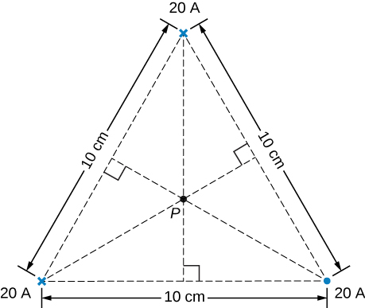A current I flows around a wire bent into the shape of a square of side a. What is the magnetic field at the point P that is a distance z above the center of the square (see the accompanying figure)?
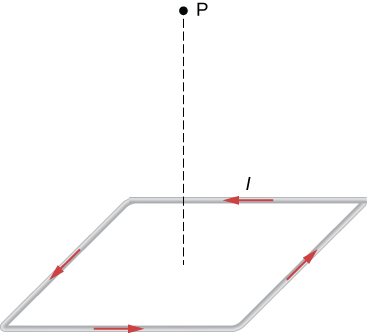The accompanying figure shows a long, straight wire carrying a current of 10 A. What is the magnetic force on an electron at the instant it is 20 cm from the wire, traveling parallel to the wire with a speed of Describe qualitatively the subsequent motion of the electron.
in an arc away from the wire
Current flows along a thin, infinite sheet as shown in the accompanying figure. The current per unit length along the sheet is J in amperes per meter. (a) Use the Biot-Savart law to show that on either side of the sheet. What is the direction of on each side? (b) Now use Ampère’s law to calculate the field.
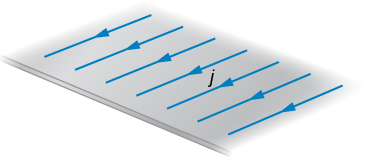(a) Use the result of the previous problem to calculate the magnetic field between, above, and below the pair of infinite sheets shown in the accompanying figure. (b) Repeat your calculations if the direction of the current in the lower sheet is reversed.
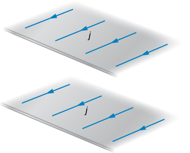a. above and below in the middle b. above and below in the middle
We often assume that the magnetic field is uniform in a region and zero everywhere else. Show that in reality it is impossible for a magnetic field to drop abruptly to zero, as illustrated in the accompanying figure. (Hint: Apply Ampère’s law over the path shown.)
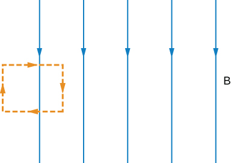How is the fractional change in the strength of the magnetic field across the face of the toroid related to the fractional change in the radial distance from the axis of the toroid?
Show that the expression for the magnetic field of a toroid reduces to that for the field of an infinite solenoid in the limit that the central radius goes to infinity.
A toroid with an inner radius of 20 cm and an outer radius of 22 cm is tightly wound with one layer of wire that has a diameter of 0.25 mm. (a) How many turns are there on the toroid? (b) If the current through the toroid windings is 2.0 A, what is the strength of the magnetic field at the center of the toroid?
a. 5026 turns; b. 0.00957 T
A wire element has where A and dv are the cross-sectional area and volume of the element, respectively. Use this, the Biot-Savart law, and to show that the magnetic field of a moving point charge q is given by:
A reasonably uniform magnetic field over a limited region of space can be produced with the Helmholtz coil, which consists of two parallel coils centered on the same axis. The coils are connected so that they carry the same current I. Each coil has N turns and radius R, which is also the distance between the coils. (a) Find the magnetic field at any point on the z-axis shown in the accompanying figure. (b) Show that dB/dz and are both zero at z = 0. (These vanishing derivatives demonstrate that the magnetic field varies only slightly near z = 0.)
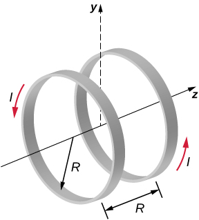A charge of is distributed uniformly around a thin ring of insulating material. The ring has a radius of 0.20 m and rotates at around the axis that passes through its center and is perpendicular to the plane of the ring. What is the magnetic field at the center of the ring?
A thin, nonconducting disk of radius R is free to rotate around the axis that passes through its center and is perpendicular to the face of the disk. The disk is charged uniformly with a total charge q. If the disk rotates at a constant angular velocity what is the magnetic field at its center?
Consider the disk in the previous problem. Calculate the magnetic field at a point on its central axis that is a distance y above the disk.
Consider the axial magnetic field of the circular current loop shown below. (a) Evaluate Also show that (b) Can you deduce this limit without evaluating the integral? (Hint: See the accompanying figure.)
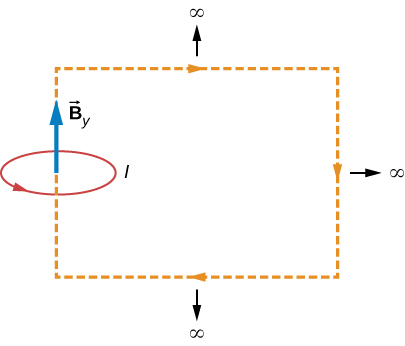derivation
The current density in the long, cylindrical wire shown in the accompanying figure varies with distance r from the center of the wire according to where c is a constant. (a) What is the current through the wire? (b) What is the magnetic field produced by this current for For
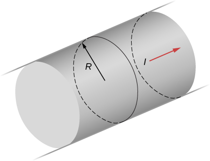A long, straight, cylindrical conductor contains a cylindrical cavity whose axis is displaced by a from the axis of the conductor, as shown in the accompanying figure. The current density in the conductor is given by where is a constant and is along the axis of the conductor. Calculate the magnetic field at an arbitrary point P in the cavity by superimposing the field of a solid cylindrical conductor with radius and current density onto the field of a solid cylindrical conductor with radius and current density Then use the fact that the appropriate azimuthal unit vectors can be expressed as and to show that everywhere inside the cavity the magnetic field is given by the constant where and is the position of P relative to the center of the conductor and is the position of P relative to the center of the cavity.
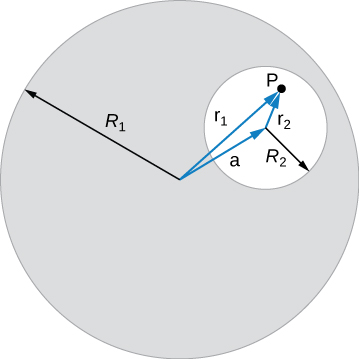derivation
Between the two ends of a horseshoe magnet the field is uniform as shown in the diagram. As you move out to outside edges, the field bends. Show by Ampère’s law that the field must bend and thereby the field weakens due to these bends.
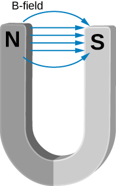Show that the magnetic field of a thin wire and that of a current loop are zero if you are infinitely far away.
As the radial distance goes to infinity, the magnetic fields of each of these formulae go to zero.
An Ampère loop is chosen as shown by dashed lines for a parallel constant magnetic field as shown by solid arrows. Calculate for each side of the loop then find the entire Can you think of an Ampère loop that would make the problem easier? Do those results match these?
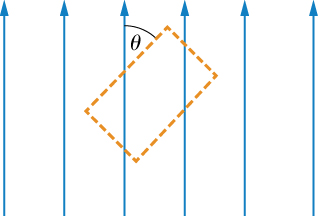A very long, thick cylindrical wire of radius R carries a current density J that varies across its cross-section. The magnitude of the current density at a point a distance r from the center of the wire is given by where is a constant. Find the magnetic field (a) at a point outside the wire and (b) at a point inside the wire. Write your answer in terms of the net current I through the wire.
a. ; b.
A very long, cylindrical wire of radius a has a circular hole of radius b in it at a distance d from the center. The wire carries a uniform current of magnitude I through it. The direction of the current in the figure is out of the paper. Find the magnetic field (a) at a point at the edge of the hole closest to the center of the thick wire, (b) at an arbitrary point inside the hole, and (c) at an arbitrary point outside the wire. (Hint: Think of the hole as a sum of two wires carrying current in the opposite directions.)
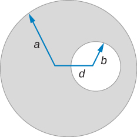Magnetic field inside a torus. Consider a torus of rectangular cross-section with inner radius a and outer radius b. N turns of an insulated thin wire are wound evenly on the torus tightly all around the torus and connected to a battery producing a steady current I in the wire. Assume that the current on the top and bottom surfaces in the figure is radial, and the current on the inner and outer radii surfaces is vertical. Find the magnetic field inside the torus as a function of radial distance r from the axis.
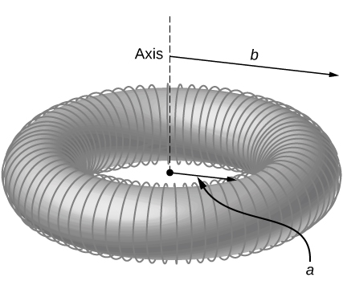
Two long coaxial copper tubes, each of length L, are connected to a battery of voltage V. The inner tube has inner radius a and outer radius b, and the outer tube has inner radius c and outer radius d. The tubes are then disconnected from the battery and rotated in the same direction at angular speed of radians per second about their common axis. Find the magnetic field (a) at a point inside the space enclosed by the inner tube and (b) at a point between the tubes and (c) at a point outside the tubes (Hint: Think of copper tubes as a capacitor and find the charge density based on the voltage applied,
The accompanying figure shows a flat, infinitely long sheet of width a that carries a current I uniformly distributed across it. Find the magnetic field at the point P, which is in the plane of the sheet and at a distance x from one edge. Test your result for the limit
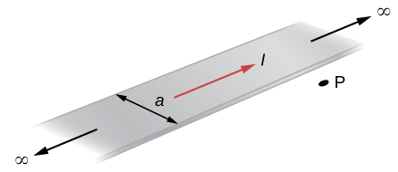A hypothetical current flowing in the z-direction creates the field in the rectangular region of the xy-plane shown in the accompanying figure. Use Ampère’s law to find the current through the rectangle.
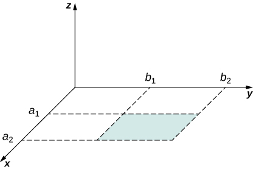A nonconducting hard rubber circular disk of radius R is painted with a uniform surface charge density It is rotated about its axis with angular speed (a) Find the magnetic field produced at a point on the axis a distance h meters from the center of the disk. (b) Find the numerical value of magnitude of the magnetic field when and and compare it with the magnitude of magnetic field of Earth, which is about 1/2 Gauss.
a. ; b. 82% of Earth’s magnetic field